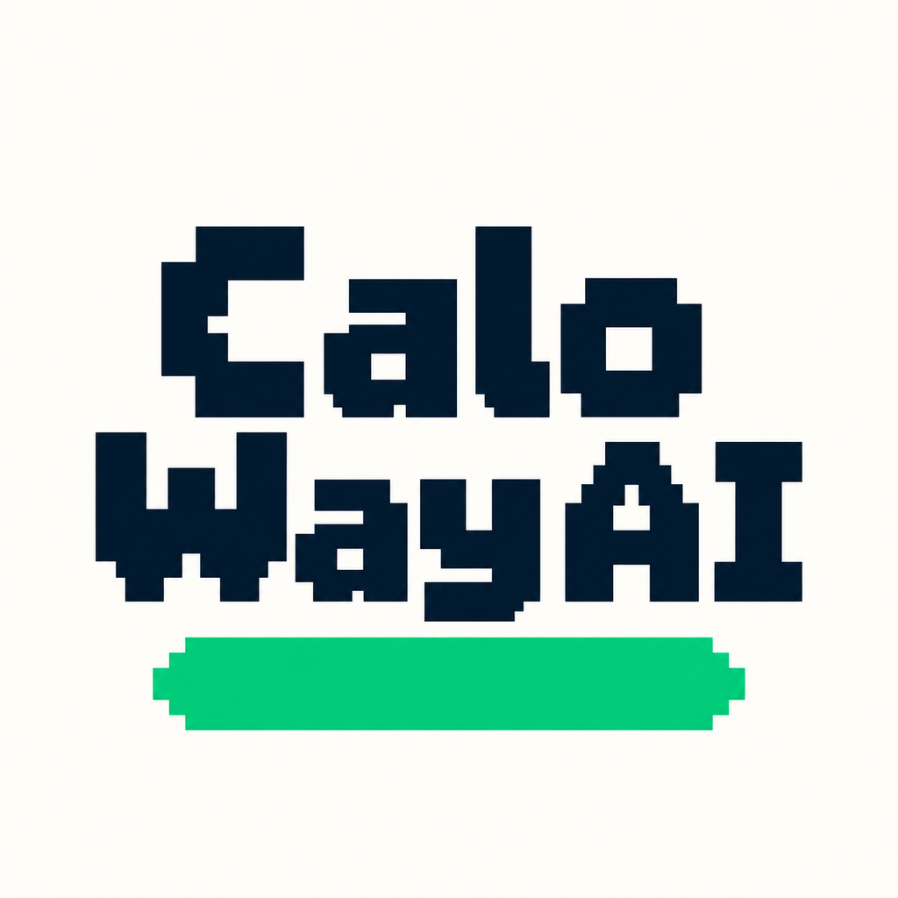
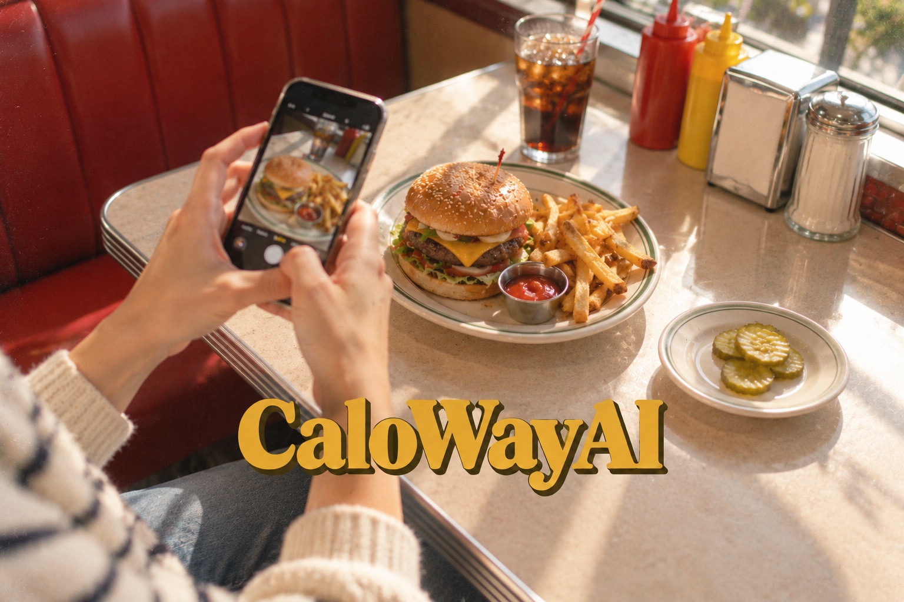
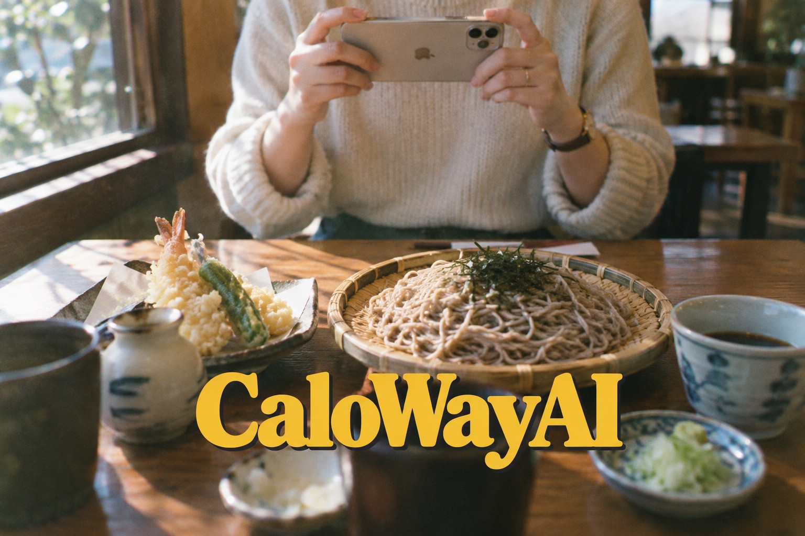
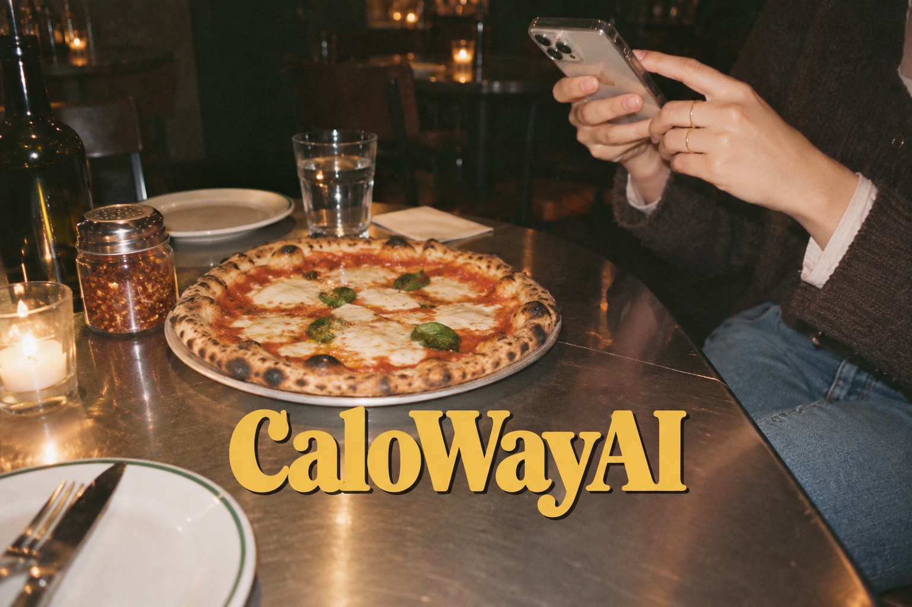
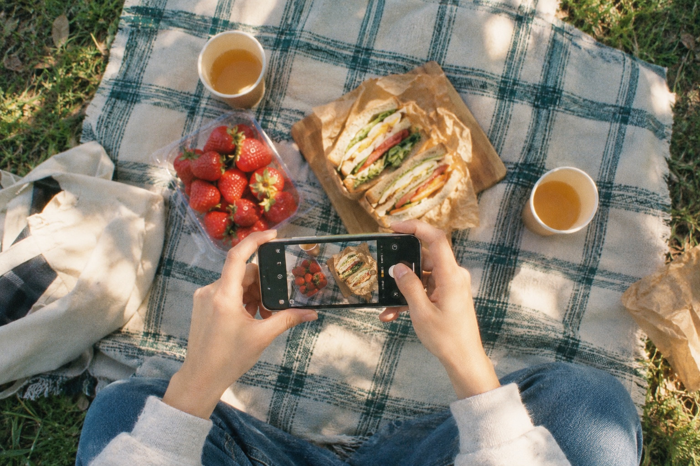
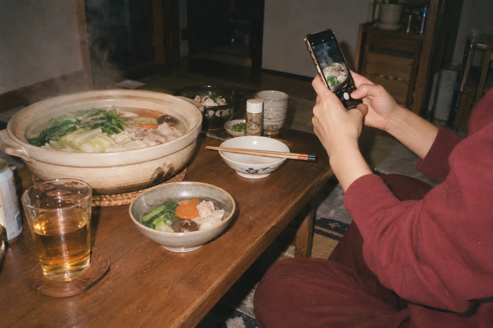
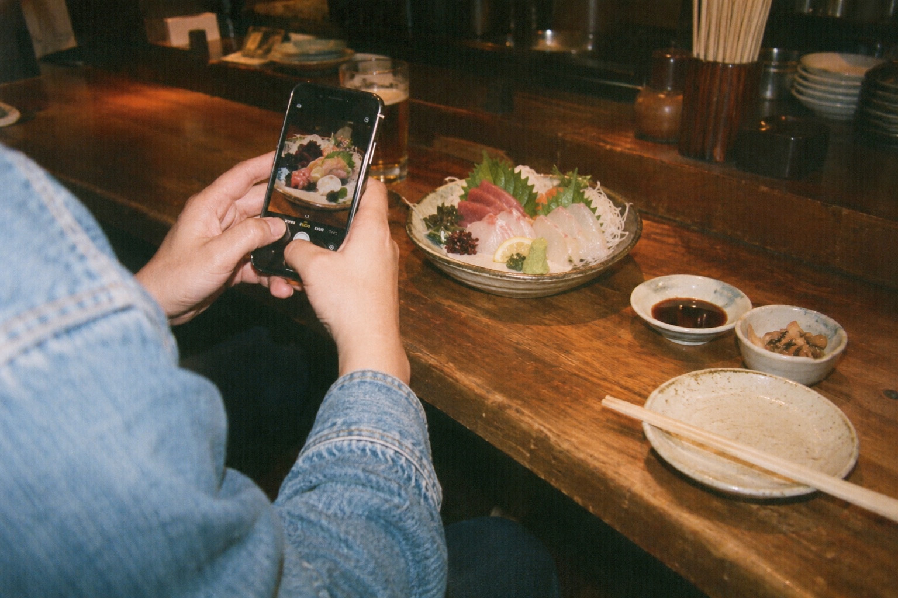
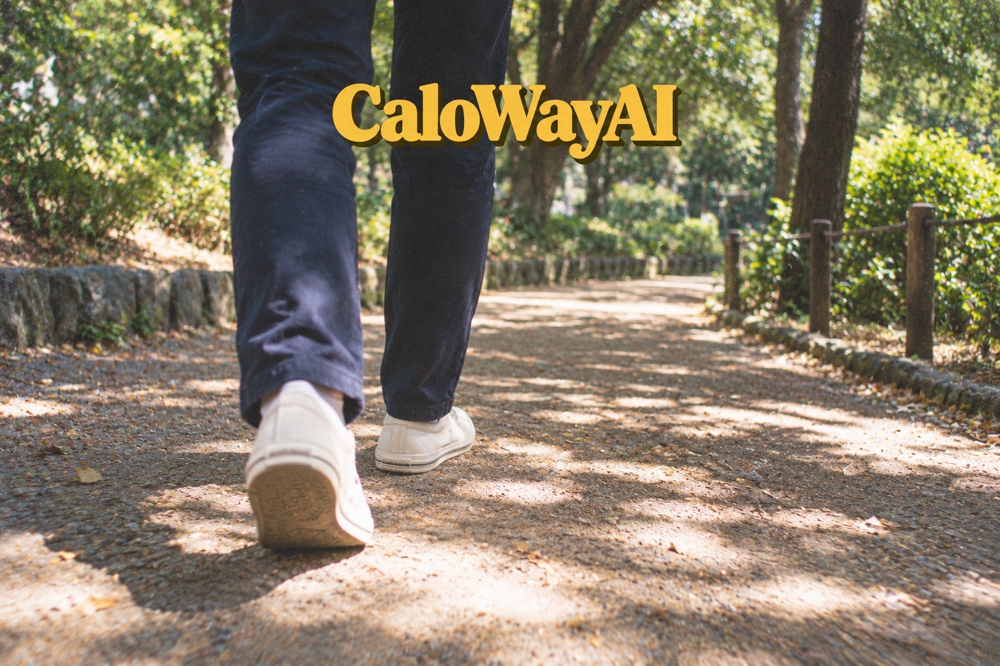
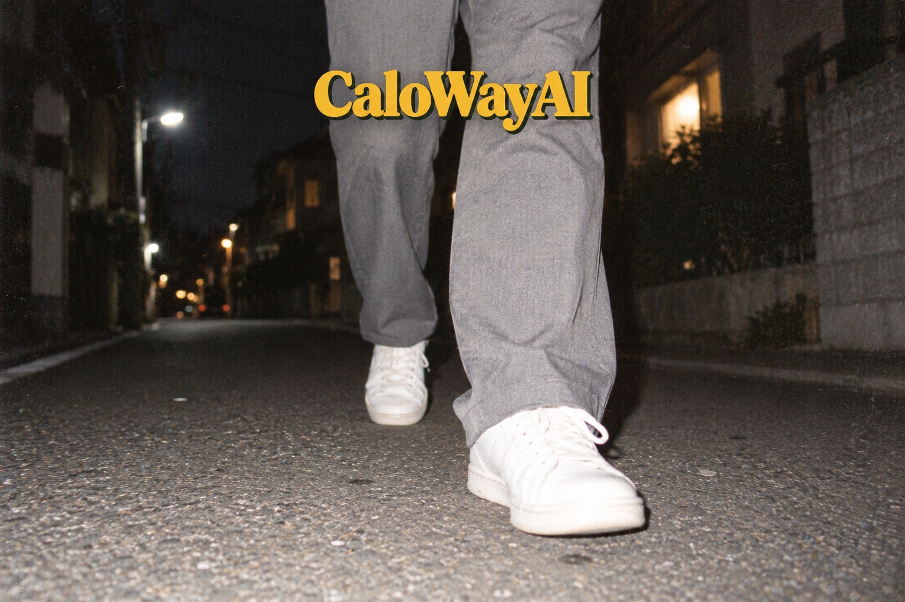
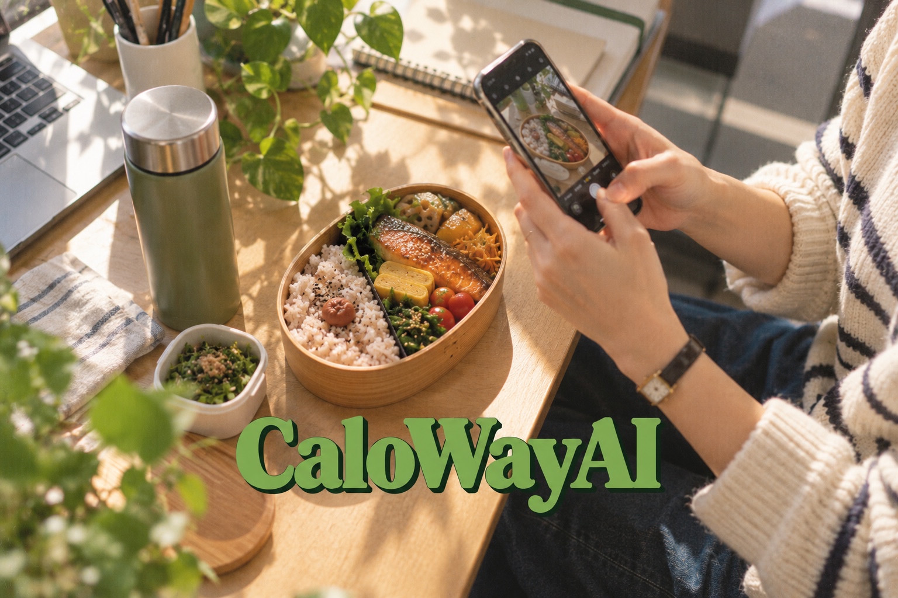

写真で、かんたん。
食事や成分表示を撮影。
写真ライブラリからも選べます。
- 料理名・食材・量・カロリー・PFCをAIが推定
- 推定結果を確認して、料理名・量・カロリー・PFCを編集
- AIの数値は目安です。実際の食事に合わせて見直せます。

CaloWay AIカロウェイAIA LITTLE SNAP. A SUNNY ROUTINE.
写真を1枚。食事を記録。
カロリー・PFC・体重を、
自分のペースで管理しよう。
7日間無料トライアル・以降 月額390円（税込）
自動更新。詳細は料金プランをご確認ください。

GOOD FOOD. GOOD DAYS.
食べる楽しさ、そのままに。
日々の食事を、写真から残そう。




写真は料理撮影のイメージです。アプリの実画面ではありません。
SIDE A / できること
がんばりすぎない食事管理を。
続けるための機能を、シンプルにまとめました。

食事にスマホを向けて、写真を1枚。
または、ライブラリにある写真を選択。
AIによるカロリーや栄養情報は推定値です。実際の値と異なる場合があります。
食事や成分表示を撮影。
写真ライブラリからも選べます。
1日のカロリーとPFCを、
見やすいグラフで確認。
食べたものを、日付から。
カレンダーで記録を確認。
朝の定番も、好きなメニューも。
登録して、毎日の入力を手軽に。
食事と一緒に、体重も記録。
変化をグラフで振り返れます。
あなたの情報と目標から、
1日のカロリー・PFCの目安を。
SIDE B / SMALL STEPS
アップデート公開待ち毎日の食事と一緒に、歩いた一日も振り返る。
ヘルスケア連携で、歩数を確認できるようになる予定です。
※歩数連携はアップデート公開待ちの機能です。2026年10月18日時点のApp Store公開版1.0には含まれていません。提供時期・内容は変更される場合があります。


歩く日常のイメージです。アプリ画面ではありません。
歩数連携はアップデート公開待ちです。
YOUR LITTLE COMPANION
アップデート公開待ち食事を記録する時間を、ちょっと楽しみに。
日々の利用に合わせて成長する、相棒の機能を準備しています。
※相棒の成長もアップデート公開待ちです。公開版1.0には含まれていません。相棒の能力は、健康状態や栄養の良し悪しを評価するものではありません。食事を多く摂ることを勧める機能ではありません。
レベルと能力は、それぞれの成長。
※実際の相棒キャラクター素材を使用した紹介イメージです。アプリ画面とは異なります。TAKE IT EASY / はじめかた
完璧な記録より、
あなたのペースで続く記録を。

写真を撮影、またはライブラリから選択。
料理名や量、カロリー・PFCを確認して編集。
食事履歴や体重グラフで、自分の変化を確認。
¥390 / 月（税込）
7日間無料トライアル
無料トライアル終了後は月額サブスクリプションに自動更新されます。日本向け価格です。適用条件・最新の料金は購入画面をご確認ください。管理・解約はApple Accountの設定から行えます。
AIによる料理名・量・カロリー・PFC・栄養情報は推定値です。実際の値と異なる場合があります。本アプリは医療上の診断、治療、医学的助言や専門的な栄養指導を提供するものではありません。